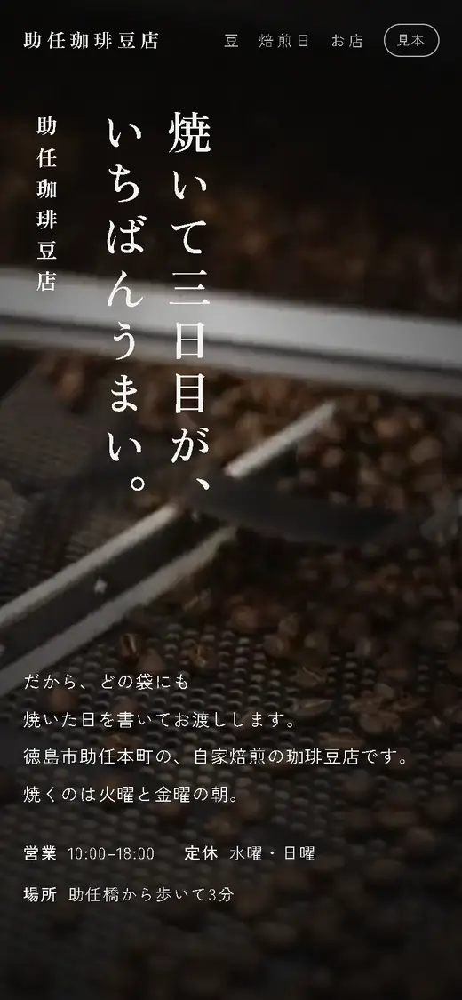
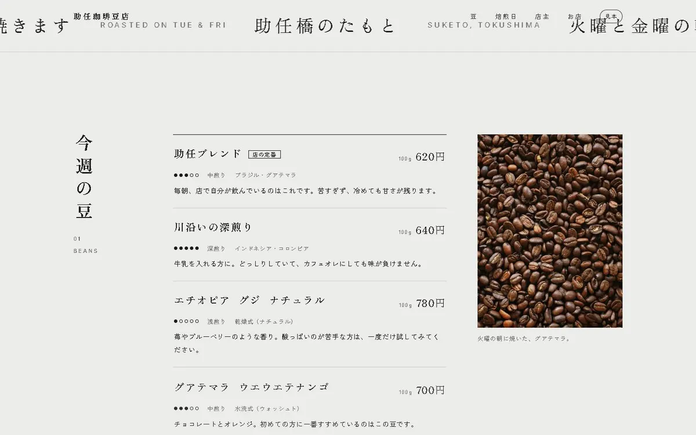
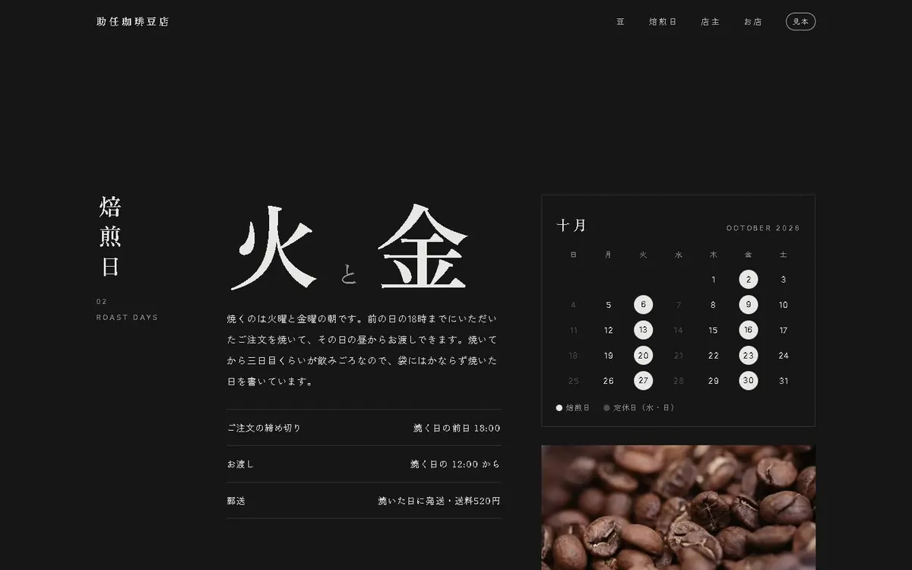
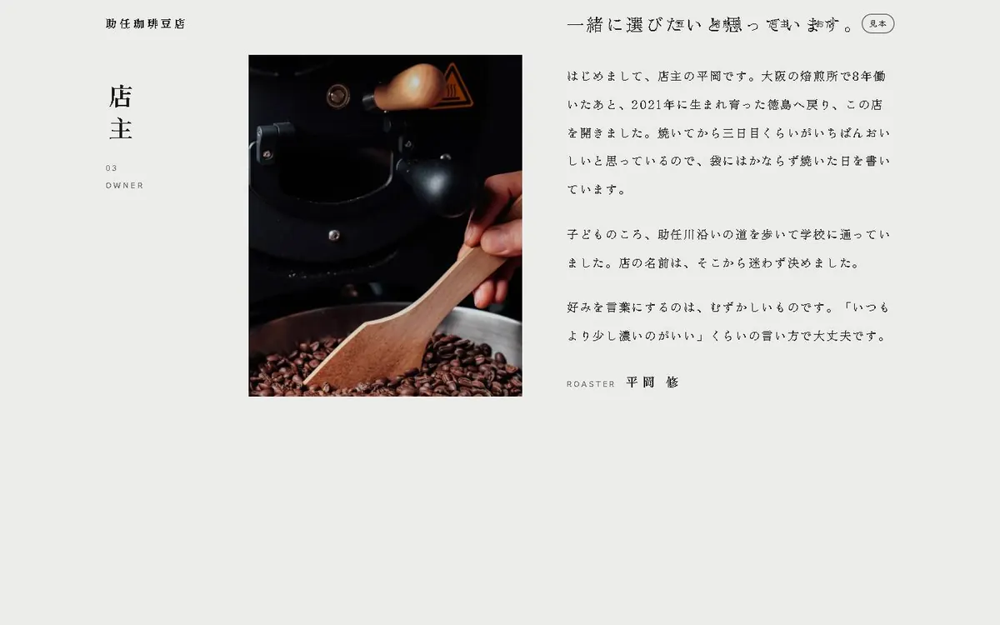

WORK DETAIL / 03
焼いて三日目が、いちばんうまい。助任珈琲豆店SUKETO COFFEE BEANS
徳島市助任本町の、自家焙煎の珈琲豆店（架空）のサイトです。
サイトを見る（新しいタブ）
公開中のサイトを、実際に操作して録った映像です。
01 / THE IDEA
いつ焼くのかを、ページの色で知らせる。
豆の味は、焼いてからの日数で変わります。だからサイトでは、何を売っているかと同じくらい「いつ焼くのか」を伝えることを大事にしました。
白い地の豆の一覧を読み進め、焙煎日の欄まで来たところで、ページ全体を墨色に切り替えています。焼く曜日を示す大きな「火」「金」の横では、十月の暦の火曜と金曜が順に灯る仕掛けです。
02 / SCENES
ページの中の3つの場面

SCENE01
全国12軒の豆屋さんのサイトを読み比べて、載せることを決めた一覧。焼き具合と値段まで、選ぶ人が知りたいことを書いています。

SCENE02
焼く曜日の「火」「金」を、いちばん大きな字で。この欄に来ると、ページ全体が墨色に変わります。

SCENE03
「誰が焼くのか」に、店主の写真と言葉で答える場面です。